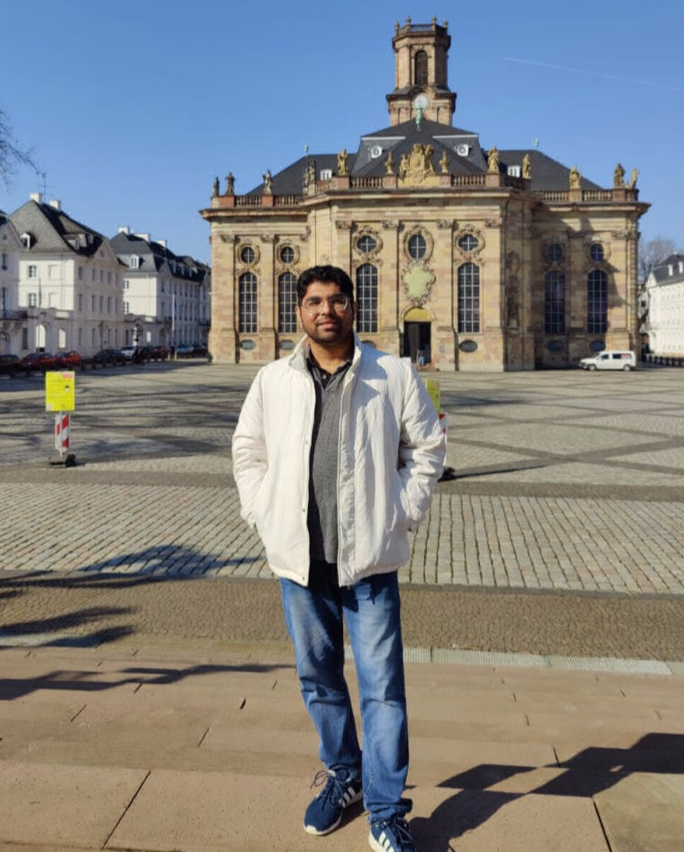

NETWORKS · SECURITY · PRIVACY
Devashish Gosain
Assistant Professor, Computer Science & Engineering, IIT Bombay — associated researcher, Max Planck Institute for Informatics.
I lead the ONYX group and serve as Co-PI of the Trust Lab at IIT Bombay.
My area of reserach is Network Security and Online Privacy. I am actively looking for motivated PhD, master's, and undergraduate researchers to join my group. Please read the notes for prospective students before writing in.

IIT BOMBAY
News & Updates
LOG- 2026Paper accepted at NDSS 2026
- 2026Paper accepted at PoPETS 2026
- 2026Paper accepted at USENIX Security 2026
- 2026Paper accepted at WWW 2026
- 2026Paper accepted at CoNEXT 2026
- 2026Paper accepted at AsiaCCS 2026
- 2026Paper accepted at CCS 2026
- 2026Paper accepted at FOCI 2026
- 2026Reviewer — USENIX Security, CCS, PoPETS, AsiaCCS, IMC 2026
- 2025Paper accepted at EuroS&P 2025
- 2025Paper accepted at PoPETS 2025
- 2025Reviewer — USENIX Security, PoPETS, CCS, IMC 2025
- 2025Organizing Committee member, IMPACT (co-located with NDSS 2025)
- 2024Joined as Assistant Professor at IIT Bombay
- 2024Vice PC Chair, PoPETS 2024
- 2024Delivered a talk at the IETF MAPRG session — abstract / video
- 2024Paper accepted at PAM 2024
- 2023Two papers accepted at IMC 2023
- 2023Paper accepted at USENIX Security 2023
- 2023Paper accepted at ICCCN 2023
- 2023Paper accepted at PAM 2023
- 2023Paper accepted at INFOCOM 2023
- 2023Paper accepted at NDSS 2023
- 2022Paper accepted at CCS 2022
- Aug 2022Joined KU Leuven as postdoctoral researcher
- 2022Reviewer — ShadowPC, IMC 2022
- 2022Reviewer — ESORICS 2022
- 2021Demo paper accepted at ICNP 2021
- 2021Paper accepted at WPES 2021 (co-located with CCS)
- 2021Paper accepted at LCN 2021
- 2021Paper accepted at AsiaCCS 2021
- 2021Paper accepted at PETS 2021
- 2020Paper accepted at LCN 2020
- 2020Poster accepted at HotPETs 2020 — poster
- Nov 2020Joined Max Planck Institute for Informatics as postdoctoral researcher
- Aug 12, 2020Successfully defended my PhD thesis. Committee: Prof. Amir Houmansadr, Dr. Amogh Dhamdhere, Prof. Vinay J. Ribeiro — thesis
- 2020Reviewer, IEEE Access
- Feb 2020Submitted my PhD thesis
- Winter 2019Visiting scholar at Brigham Young University (BYU), USA — ISRL lab
- Aug 2019Successfully defended my PhD comprehensive exam. Committee: Prof. Vinayak Naik, Prof. Pushpendra Singh (internal), Prof. Angelos Keromytis (external)